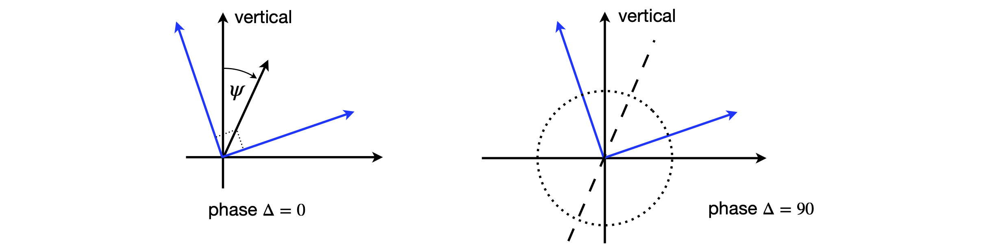

11 Polarizing optics
Contents
11 Polarizing optics#
11 Polarizers#
Using the polarization properties of light can lead to a very sensitive method of detecting spectroscopic features. If light is linearly polarized, its electric field oscillates in one plane only, which is perpendicular to the direction the light travels in. This is shown in Figure 45, where the polarization is in the x-z plane, and this plane is defined as ‘vertical’. Horizontally polarized light would have its electric field in the y-z plane. Light can be linearly polarized at any other angle, perhaps \(45^\text{o}\), in which case it would have equal components of the horizontal and vertical. Any amplitude of vertical and horizontal linear polarizations can be added vectorially to make linear polarization at any other angle. In this sense, vertical polarization is the addition of vertical with a zero horizontal component and vice versa. In the most general case, components in the y- and x-directions have a phase difference between them. When the phase lag is zero, linear polarization results; when \(\pm 90^\text{o}\), right and left circular polarization results and the electric field rotates about the direction of travel, see Figure 2.7. Linear polarized light is a special case of elliptical polarization. The description of polarization states is quite technical and elliptical polarized light somewhat difficult to visualize properly; however, by accepting that such polarization exists, the matrix methods to calculate the complicated changes caused by wave-plates and polarizers are surprisingly simple. In a typical experiment, a sample is placed between two crossed polarizers the second of which is adjusted usually to \(90^\text{o}\) compared to the first to extinguish any light passing through the first polarizer and the sample. If a small perturbation is now made to the sample, such as exciting it with a second laser or applying an electric or magnetic field, then its optical properties can be changed. Some light now leaks through the second polarizer and is detected; the amount of light is related to the perturbation and hence can convey some information about the molecules in the sample. The scheme is shown in Figure 46. This is a zero-background type of experiment, fluorescence is another, and because no signal is seen before the perturbation occurs, all zero-background types of experiments are very sensitive.
The polarizers could be made from sheets of Polaroid, such as in sunglasses. However, far better ones are made from the transparent and birefringent mineral calcite (CaCO\(_3\)). The crystal is cut at a certain angle and then made into two similarly shaped prisms or wedges, which, when placed at right angles to one another, form a cube. Variations of these polarizers are called Glan-Thomson or Glan-laser and when crossed only allow 1 part in \(\approx 10^6\) of the initial radiation to be passed. A Glan-Thomson polarizer set to pass vertical polarized light rejects horizontally polarized light by total internal reflection at the internal surface of the wedge, and vice versa. The angle to some fixed axis, say the vertical, is sometimes called the ‘pass-plane’ or ‘vibration plane’ of the polarized radiation. The effect is illustrated in Fig. 47 where the matrices describing the polarization are also shown as an inset.
A second type of polarizing element is a wave-plate, which causes the polarization state to be changed but does not change the light intensity. The polarization can be changed either from linear to linear with its axis rotated, or changed from linear to circular, or to elliptical polarization and vice versa. The direction that the major axis of the polarization ellipse has to the vertical is often called the fast axis; this is because wave-plates are made of birefringent crystals that have different refractive indices in different directions, and hence light has different speeds. Although one axis is called ‘fast’, the other is ‘normal’.
The properties of the polarized light and polarizing, dichroic, or birefringent optical elements can be analysed very easily by matrix methods. Although light or electromagnetic radiation generally can have a vast range of frequencies, and can travel in any direction, it has only two fundamental polarization states. These are manifested by the properties of the electric field of the radiation, which is always perpendicular to the direction of travel. Any polarizing state can be generated from randomly polarized radiation using only two types of optical elements; these are the linear polarizer and the wave-plate.
Starting with arbitrarily polarized light, such as sunshine, which has its electric vector randomly changing and so takes up any angle, passing it through a polarizer produces linear polarized light. If this light is then passed through a wave-plate, depending on the type of wave-plate and the direction of its polarization axis either the linear polarization is rotated, or it becomes circularly polarized. In the most general case, elliptically polarized light results, again with the major axis is a direction determined by the wave-plate used. Some examples of this effect are given in Fig. 48.
Figure 45.Linear, vertically polarized light. Vertical polarized light has its electric field oscillating in the x - direction.
Figure 46. A polarization experiment; polarizer 1 and 2 are crossed and will not transmit any light. If the sample is perturbed, such by polarized laser light, it acts as a waveplate and some light is transmitted.
The fundamental nature of light can be considered to be one of the two circular polarized states, left and right. To allow analysis of any polarization states, two types of algebra have been developed; these are the Jones and Mueller matrices. We shall concentrate on the Jones matrices. Gerrard & Burch (1975) describe the Mueller matrices, which are more appropriate for partially polarized light. The state of the electric field is represented as a Maxwell column; equation 27 shows equivalent forms of this
where \(\Delta\) is the phase difference between vertical and horizontal components, and \(\psi\) is the angle of the electric vector of the light from the laboratory y-axis. \(A_V\) is the amplitude of the vertical or y, component of the electric field and \(A_H\) that of the horizontal component; note that intensity (J/cm\(^2\)) is amplitude squared and this is what is measured on a photodiode, a CCD detector, or your eye. This is most important; working with the amplitude allows us to calculate correctly the effect of the phase. If we were to work only with the intensity then effects based on phase differences would not be correct.
Figure 47. Light composed of equal amounts of horizontal and vertically linearly polarized light is incident on a polarizer. The polarizer is set to pass the vertical component only; the horizontal component is reflected out of the beam. If a film of Polaroid aligned in the same manner was used, the horizontal component would be absorbed by the polarizer.
Linear polarized light is a linear combination of two circular polarization states but with zero phase difference between them (\(\Delta = 0\)), consequently the orientation of its electric vector lies in one plane only and this may take any angle compared to the lab y-axis. The vectors representing linear polarization with unity amplitude in the vertical and horizontal directions respectively \(\displaystyle V=\begin{bmatrix} 1\\0\end{bmatrix}, H=\begin{bmatrix} 0\\1\end{bmatrix}\) because \(\psi=0\) and \(\delta=0\).
Linearly polarized light can be formed at \(\phi = 45^\text{o}\) to the vertical and is then described by the normalized vector \(\displaystyle L_{45}=\begin{bmatrix} 1\\1 \end{bmatrix}\) which has equal components in the vertical and horizontal directions. Linearly polarized light at any angle \(\psi\) has vertical and horizontal components of \(\sin(\psi)\) and \(\cos(\psi)\). The angle \(\psi\) is sometimes called the pass-plane or vibration plane of the polarized radiation. Linearly polarized light at an angle \(\psi\) to the vertical is shown below left in figure 49.
Circularly polarized light always has equal contributions of the two base states but they have a phase difference of exactly \(\displaystyle = \pm 90^\text{o}\) so that the electric field draws out a left-handed or right-handed helical pattern about the direction of travel. If the angle \(\psi = 45^\text{o}\) the normalized vectors, using equation 27, are
because \(e^{i\pi/2} = i\). The amplitude of a unit-amplitude, circularly polarized wave along the z-axis is \(A = \cos(z) + i \sin(z)\) which is also \(e^{iz}\). Elliptically polarized light is the most general form with linear and circular polarization as its limits; it has all other possible ratios of amplitudes, angles \(\psi\), and phase differences \(\Delta\). In elliptically and circularly polarized light, the electric field spirals either clockwise or anticlockwise about the direction of travel.
Figure 48. Linearly polarized light, the phase between the x and y components is zero. This polarization can be at any angle. Middle: Left and right circular polarized light has equal components of x and y polarizations but \(90^\text{o}\) out of phase. Right: Elliptically polarized light can be left or right polarized but with different amounts of x and y components and some arbitrary phase between them.
The intensity of the light after passing through an optical polarizing element, a polarizer, or wave-plate is the dot product of the Jones matrices, because crudely speaking intensity is amplitude squared. The Hermitian transpose must be used to form the row from the column, which means taking the complex conjugate as well as transposing. Thus, for unit amplitude linear V-polarized light the intensity is
and for left circular polarized light
Calculating the intensities is the last step in the process; the first step is to pass the light trough a number of optical elements, and as the response is linear the output Maxwell column matrix is related to the input by a \(2 \times 2\) matrix. Each optic has the effect
and the matrices for different elements are tabulated below. When several optical elements are used, the square matrices are multiplied together. Note that vertical polarization is in the x-direction in the way we have defined the matrices. The input light column matrix is always on the right. The other matrices to the left of this are placed in the order of the experimental arrangement; just as with the \(ABCD\) matrices for geometric optical calculations, see Section 10. Thus the matrix arrangement for an experimental arrangement such as;
is to order the matrices with the input on the right,
The angle \(\theta\) rotated is calculated from the column output vector as \(\displaystyle \tan(\theta) =\frac{H_{out}}{V_{out}}\).

Figure 49. Linearly polarized light, the linear components are at \(90^\text{o}\) to one another but rotated to give a linearly polarized beam at \(\psi\) to the vertical. Right: circular polarized light with equal components but \(90^\text{o}\) out of phase with one another, the axis of the circle is shown dotted and is at \(\psi\) to the vertical as in the left figure.
Now we are in business to do almost any real calculation when we know the form of the \(2 \times 2\) matrices! These have been worked out and are:
(a)\(\quad\) Linear polarizer: polarizer at any angle \(\theta\), where \(\theta\) is rotation from vertical;
\(\qquad\) Vertical polarizer \(\theta=0^\text{o}\quad \begin{bmatrix} 1 & 0 \\0& 0 \end{bmatrix} \qquad\) Horizontal polarizer \(\theta=90^\text{o}\quad \begin{bmatrix} 0 & 0 \\0& 1 \end{bmatrix} \)
(b)\(\quad\) Quarter wave plate: \(\Delta = \pi/2\), with fast axis angle \(\theta\),
\(\qquad\) Fast axis vertical \(\theta=0^\text{o}\quad \begin{bmatrix} 1 & 0 \\0& -i \end{bmatrix} \qquad\) Fast axis horizontal \(\theta=90^\text{o}\quad \begin{bmatrix} -i & 0 \\0& 1 \end{bmatrix} \)
(c)\(\quad\) Half wave plate: \(\Delta = \pi\) with fast axis at \(\theta\),
\(\qquad\) Fast axis vertical \(\theta=0^\text{o}\quad \begin{bmatrix} 1 & 0 \\0& -1 \end{bmatrix} \qquad\) Fast axis horizontal \(\theta=90^\text{o}\quad \begin{bmatrix} -1 & 0 \\0& 1 \end{bmatrix} \)
(d)\(\quad\) General Linear Retarder or wave-plate:
\(\qquad\) Rotation angle of fast axis \(\theta\) from vertical, and phase retardation \(\delta\).
The linear retarder or wave-plate can cause the vertical and horizontal components to be delayed from one another by an amount, \(\Delta\) but can also rotate the axes so that if, say, elliptical light is being formed, its major and so also its minor axes, can be rotated. The amount of retardation is set by the optical properties of the wave-plate’s material. Crystalline quartz and calcite are both birefringent materials and therefore each has two refractive indices, an ‘ordinary’ and an ‘extraordinary’ one. The crystal has to be oriented and then cut so that the two refractive indices are directed at right angles to one another in the face of the wave-plate. Depending upon the rotation angle that the crystal presents to the incoming light, different amounts of these two refractive indices are used to change the incoming light. One polarization is always delayed with respect to the other in a wave-plate, because the speed of light at a given wavelength is different for the two polarizations because their refractive indices are different. The total phase delay caused by this time delay in passing through the crystal, depends upon cutting the crystal wave-plate to a certain thickness; for example, \(100\,\mu \text{m}\).
As an example, the effect of a wave-plate is examined. Vertically polarized light of amplitude \(V\) is passed through a half-wave plate with its fast axis at \(\theta = 0^\text{o}\), and in a separate experiment at \(\theta = 45^\text{o}\) and the nature of the resultant beam examined. The arrangement is sketched in Fig. 51. Because the wave-plate only rotates the polarization and does not absorb or reflect, the beam’s intensity should be unchanged. This should be checked to see that it is true.
Figure 50. Left and 51 right. Left. In the general case, a wave-plate converts linearly polarized light into elliptically polarized light with axis depending on the angle \(\theta\), the wave-plate and principal axis make to the polarization, and on the crystal thickness, which determines the phase delay \(\Delta\). Right. Vertically polarized light passing through a half-wave-plate. Oriented at \(45^\text{o}\) the output from the waveplate is horizontal.
Using the matrices in the table, the matrix equation for the wave-plate with its fast axis at \(0^\text{o}\) is
which has no effect on the beam. Therefore its intensity is unchanged at \(V^2\) because the dot product of the column vector with itself is unity; \(\displaystyle V^2\begin{bmatrix} 1 & 0 \end{bmatrix}\begin{bmatrix} 1 \\ 0 \end{bmatrix}=V^2\). When the wave-plate is rotated to \(45^\text{o}\) or \(\pi/4\) radians, the matrix is
and the matrix equation \(\displaystyle \begin{bmatrix} 0 & 1\\ 1 & 0 \end{bmatrix}\begin{bmatrix} V\\ 0 \end{bmatrix}=V\begin{bmatrix} 0 \\ 1 \end{bmatrix}\), which shows that the half wave plate at \(45^\text{o}\) rotates the vertical polarization to horizontal. This is extremely useful in practice to manipulate laser beams to the correct polarization for lots of different types of experiments. The rotation angle is always twice the wave-plate angle. The output intensity is unchanged at \(V^2\).